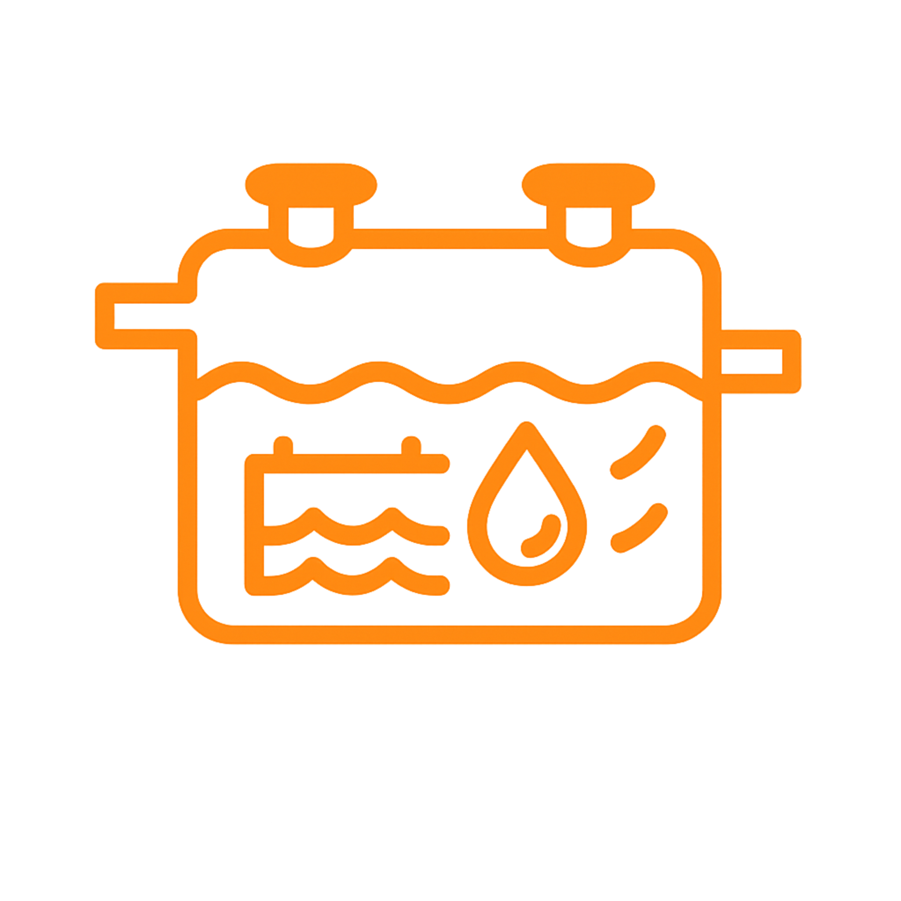
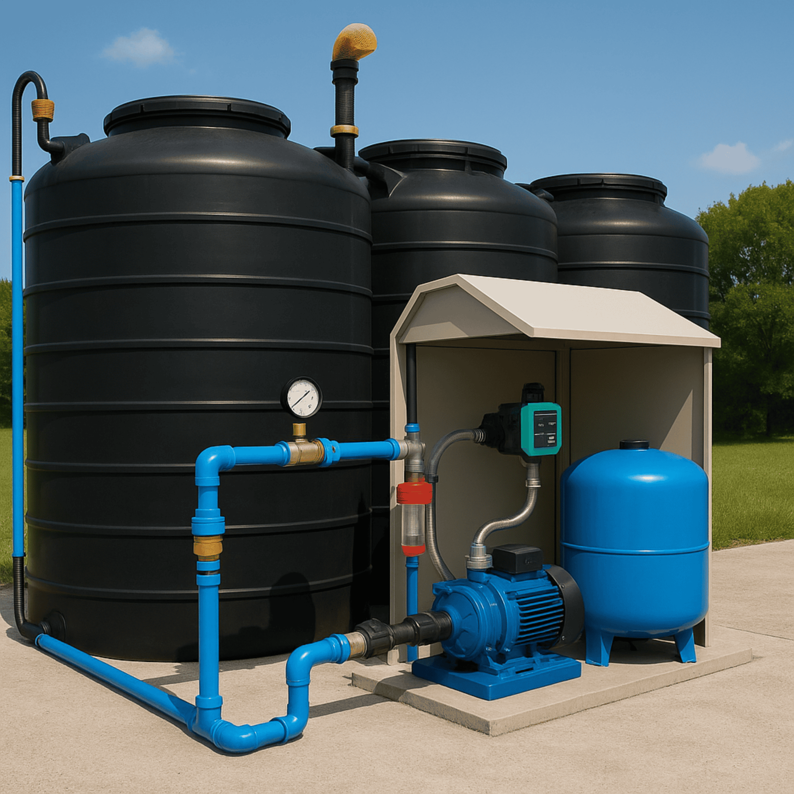
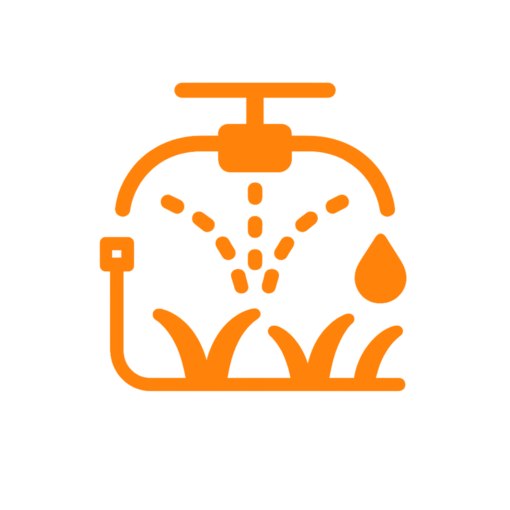
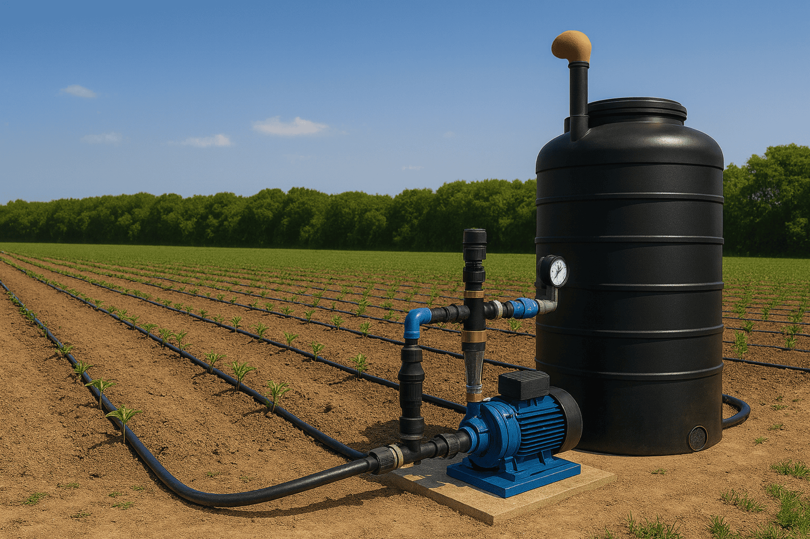
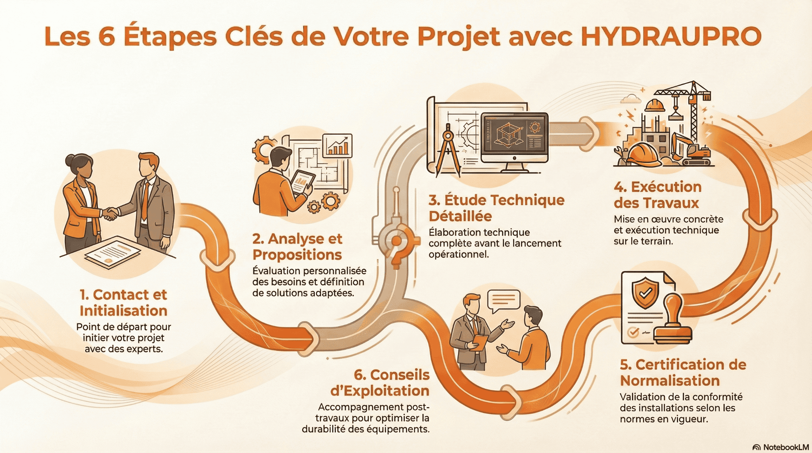

Une image plus forte
Une page d’accueil claire et premium pour rassurer vos clients et mieux valoriser vos prestations.
HYDRAUPRO accompagne les particuliers, professionnels, exploitants et porteurs de projets avec une approche technique claire, adaptée aux réalités du terrain au Sénégal.
Une page d’accueil claire et premium pour rassurer vos clients et mieux valoriser vos prestations.
Pour l’eau, l’assainissement et l’irrigation.
Un discours clair qui inspire confiance et crédibilité.
Des réponses adaptées aux contraintes réelles des projets.
Une présentation claire de vos métiers pour permettre au visiteur de comprendre rapidement ce que vous faites et vers quelle prestation s’orienter.

01
Des solutions adaptées aux sites non raccordés au réseau collectif, avec une attention particulière portée à l’hygiène, à la durabilité et à la protection de l’environnement.

Des systèmes conçus pour améliorer la pression, sécuriser le stockage et garantir une distribution plus fiable de l’eau potable.

03
Des solutions d’irrigation pensées pour optimiser l’usage de l’eau, soutenir les cultures et améliorer la performance des installations.
Une entreprise qui veut allier sérieux, lisibilité et solutions adaptées au contexte local.
Le visiteur comprend vite ce que vous faites, pour qui et avec quelle logique.
Les visuels, les blocs et le ton renforcent l’impression de sérieux dès les premières secondes.
Chaque solution est présentée comme une réponse au terrain, à l’usage et au besoin réel.
Le client se voit déjà avancer avec vous, parce que la page explique et rassure clairement.
Une équipe identifiée, une méthode claire et une présence terrain pour mieux accompagner chaque projet.

HYDRAUPRO s’appuie sur des interlocuteurs identifiés pour analyser les besoins, orienter les choix techniques et accompagner les projets avec méthode.
Il accompagne les projets liés à l’assainissement, à la distribution d’eau et aux équipements techniques avec une approche rigoureuse et opérationnelle.
Il intervient dans l’analyse des besoins, l’orientation technique et le suivi des projets en tenant compte des contraintes du terrain.
Contactez HYDRAUPRO pour échanger sur vos besoins en assainissement, distribution d’eau potable ou irrigation. Nous vous répondrons rapidement avec une approche claire et adaptée.